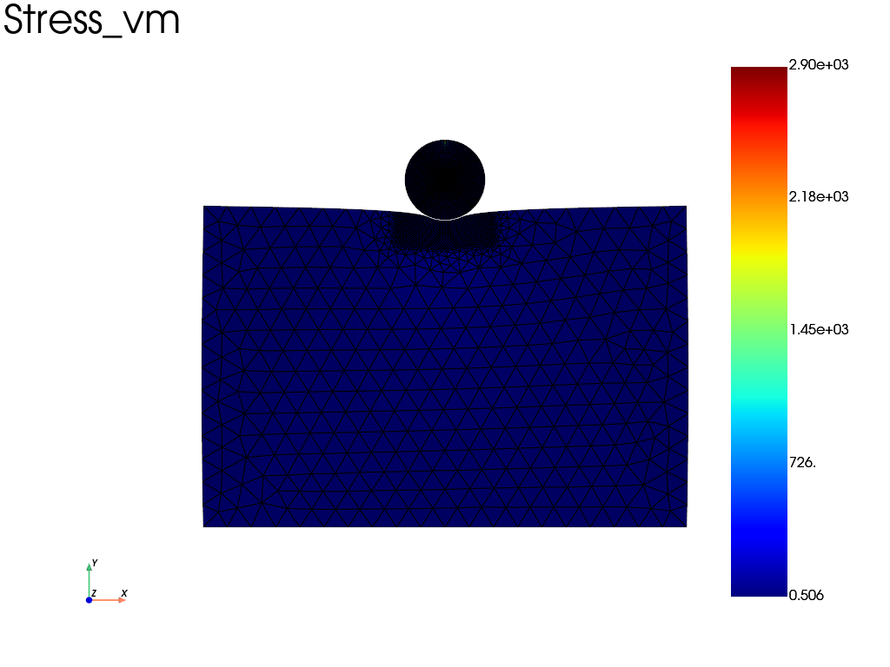
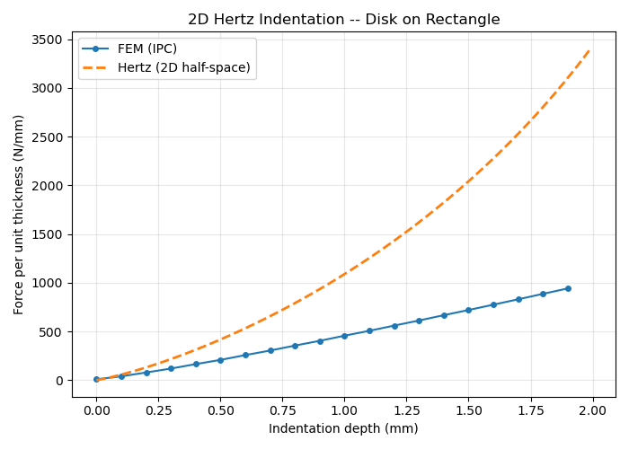

Note
Go to the end to download the full example code.
Disk indentation (2D plane strain) — IPC contact with Hertz comparison
A stiff elastic disk is pressed vertically into a softer elastic rectangle (plane strain). This is a classical Hertz-like contact benchmark.
The plate is meshed with gmsh, using a graded size field that concentrates elements near the contact zone. The disk uses fedoo’s built-in disk_mesh.
The simulation uses the IPC barrier method for contact and compares the computed force-indentation curve to the 2D Hertz analytical prediction (Johnson, Contact Mechanics, Ch. 4):
with \(a\) the contact half-width, \(P\) the force per unit length and \(E^*\) the effective modulus.
Only the load-width relation \(P(a)\) is independent of the geometry of the body. In 2D the displacement of a half-space under a line load grows logarithmically with the distance, so an indentation depth \(\delta\) is only defined relative to a reference depth. The \(\delta(a)\) relation above (Johnson’s cylinder formula) implicitly places this reference at a depth of the order of \(R\), whereas the plate here is clamped at \(h = 40 \gg R = 5\). The extra compliance of the plate below that depth adds to the indentation, so the FEM force at a given \(\delta\) is expected to be lower than the Hertz curve. A reference-free comparison would plot \(P\) against the contact half-width \(a\). At the final increment \(a/R \approx 0.85\), well outside the small-contact assumption \(a \ll R\) of the Hertz theory, so the curves are only expected to agree qualitatively.
Note
Requires ipctk and gmsh.


Plate mesh: 1146 nodes, 2177 elems
Disk mesh: 4233 nodes, 8280 elems
Total mesh: 5379 nodes, 10457 elems, type=tri3
============================================================
2D DISK INDENTATION -- IPC CONTACT
============================================================
Iter 1 - Time: 0.05000 - dt 0.05000 - NR iter: 4 - Err: 0.00029
Iter 2 - Time: 0.10000 - dt 0.05000 - NR iter: 4 - Err: 0.00487
Iter 3 - Time: 0.15000 - dt 0.05000 - NR iter: 3 - Err: 0.00015
Iter 4 - Time: 0.20000 - dt 0.05000 - NR iter: 3 - Err: 0.00090
Iter 5 - Time: 0.25000 - dt 0.05000 - NR iter: 2 - Err: 0.00086
Iter 6 - Time: 0.30000 - dt 0.05000 - NR iter: 2 - Err: 0.00097
Iter 7 - Time: 0.35000 - dt 0.05000 - NR iter: 2 - Err: 0.00477
Iter 8 - Time: 0.40000 - dt 0.05000 - NR iter: 2 - Err: 0.00097
Iter 9 - Time: 0.45000 - dt 0.05000 - NR iter: 3 - Err: 0.00077
Iter 10 - Time: 0.50000 - dt 0.05000 - NR iter: 3 - Err: 0.00018
Iter 11 - Time: 0.55000 - dt 0.05000 - NR iter: 3 - Err: 0.00213
Iter 12 - Time: 0.60000 - dt 0.05000 - NR iter: 2 - Err: 0.00015
Iter 13 - Time: 0.65000 - dt 0.05000 - NR iter: 3 - Err: 0.00114
Iter 14 - Time: 0.70000 - dt 0.05000 - NR iter: 3 - Err: 0.00116
Iter 15 - Time: 0.75000 - dt 0.05000 - NR iter: 3 - Err: 0.00072
Iter 16 - Time: 0.80000 - dt 0.05000 - NR iter: 2 - Err: 0.00029
Iter 17 - Time: 0.85000 - dt 0.05000 - NR iter: 3 - Err: 0.00096
Iter 18 - Time: 0.90000 - dt 0.05000 - NR iter: 2 - Err: 0.00197
Iter 19 - Time: 0.95000 - dt 0.05000 - NR iter: 3 - Err: 0.00109
Iter 20 - Time: 1.00000 - dt 0.05000 - NR iter: 1 - Err: 0.00408
Hertz comparison saved to results/indentation_2d_hertz.png
<pyvista.plotting.plotter.Plotter object at 0x7fa6187cd7e0>
import fedoo as fd
import numpy as np
import os
import tempfile
if "__file__" in globals():
os.chdir(os.path.dirname(os.path.abspath(__file__)))
# =========================================================================
# Parameters
# =========================================================================
fd.ModelingSpace("2D")
# Units: N, mm, MPa
E_plate = 1e3 # soft plate
E_disk = 1e5 # stiff disk (quasi-rigid, 100x stiffer)
nu = 0.3
R = 5.0 # disk radius
plate_half = 30.0 # half-width of the plate
plate_h = 40.0 # plate height
gap = 0.1 # initial gap between disk bottom and plate top
imposed_disp = -2.0 # total vertical displacement of disk top
# =========================================================================
# Plate mesh (gmsh -- graded refinement near contact)
# =========================================================================
import gmsh
gmsh.initialize()
gmsh.option.setNumber("General.Verbosity", 1)
plate_tag = gmsh.model.occ.addRectangle(
-plate_half,
0,
0,
2 * plate_half,
plate_h,
)
gmsh.model.occ.synchronize()
gmsh.model.addPhysicalGroup(2, [plate_tag], tag=1, name="plate")
# Fine elements near the top-centre (contact zone), coarse far away
gmsh.model.mesh.field.add("Box", 1)
gmsh.model.mesh.field.setNumber(1, "VIn", 0.3)
gmsh.model.mesh.field.setNumber(1, "VOut", 3.0)
gmsh.model.mesh.field.setNumber(1, "XMin", -6)
gmsh.model.mesh.field.setNumber(1, "XMax", 6)
gmsh.model.mesh.field.setNumber(1, "YMin", plate_h - 4)
gmsh.model.mesh.field.setNumber(1, "YMax", plate_h)
gmsh.model.mesh.field.setNumber(1, "Thickness", 4)
gmsh.model.mesh.field.setAsBackgroundMesh(1)
gmsh.option.setNumber("Mesh.MeshSizeExtendFromBoundary", 0)
gmsh.option.setNumber("Mesh.MeshSizeFromPoints", 0)
gmsh.option.setNumber("Mesh.MeshSizeFromCurvature", 0)
gmsh.model.mesh.generate(2)
plate_msh = os.path.join(tempfile.gettempdir(), "plate_indent2d.msh")
gmsh.write(plate_msh)
gmsh.finalize()
mesh_plate = fd.mesh.import_msh(plate_msh, mesh_type="surface")
# gmsh always stores 3D coordinates; strip Z for 2D modelling space
if mesh_plate.nodes.shape[1] == 3:
mesh_plate.nodes = mesh_plate.nodes[:, :2]
mesh_plate.element_sets["plate"] = np.arange(mesh_plate.n_elements)
print(f"Plate mesh: {mesh_plate.n_nodes} nodes, {mesh_plate.n_elements} elems")
# =========================================================================
# Disk mesh (fedoo built-in)
# =========================================================================
# tri3, the element type of the gmsh plate mesh, so that both can be stacked
mesh_disk = fd.mesh.disk_mesh(radius=R, nr=12, nt=24, elm_type="tri3")
# Position: disk center at (0, plate_top + R + gap)
mesh_disk.nodes += np.array([0, plate_h + R + gap])
mesh_disk.element_sets["disk"] = np.arange(mesh_disk.n_elements)
print(f"Disk mesh: {mesh_disk.n_nodes} nodes, {mesh_disk.n_elements} elems")
# Stack into single mesh
mesh = fd.Mesh.stack(mesh_plate, mesh_disk)
print(
f"Total mesh: {mesh.n_nodes} nodes, {mesh.n_elements} elems, type={mesh.elm_type}"
)
# =========================================================================
# IPC contact
# =========================================================================
surf = fd.mesh.extract_surface(mesh)
ipc_contact = fd.constraint.IPCContact(
mesh,
surface_mesh=surf,
dhat=0.05, # absolute dhat (< gap)
dhat_is_relative=False,
use_ccd=True,
)
# =========================================================================
# Material, assembly, BCs
# =========================================================================
mat_plate = fd.constitutivelaw.ElasticIsotrop(E_plate, nu)
mat_disk = fd.constitutivelaw.ElasticIsotrop(E_disk, nu)
material = fd.constitutivelaw.Heterogeneous(
(mat_plate, mat_disk),
("plate", "disk"),
)
wf = fd.weakform.StressEquilibrium(material, nlgeom=False)
solid = fd.Assembly.create(wf, mesh)
assembly = fd.Assembly.sum(solid, ipc_contact)
pb = fd.problem.NonLinear(assembly)
nodes_bottom = mesh.find_nodes("Y", 0)
nodes_disk_top = mesh.find_nodes("Y", mesh.bounding_box.ymax)
disk_nodes = np.arange(mesh_plate.n_nodes, mesh.n_nodes)
nodes_disk_axis = disk_nodes[np.isclose(mesh.nodes[disk_nodes, 0], 0.0)]
pb.bc.add("Dirichlet", nodes_bottom, "Disp", 0)
# The highest point is a single node. Prescribing it alone leaves a rigid
# rotation mode while the disk is separated from the plate. Horizontal
# symmetry on the disk centreline removes that mode without preventing its
# vertical deformation.
pb.bc.add("Dirichlet", nodes_disk_axis, "DispX", 0)
pb.bc.add("Dirichlet", nodes_disk_top, "DispY", imposed_disp)
pb.set_nr_criterion("Force", tol=5e-3, max_subiter=8)
# =========================================================================
# Output and tracking callback
# =========================================================================
if not os.path.isdir("results"):
os.mkdir("results")
res = pb.add_output("results/indentation_2d", solid, ["Disp", "Stress"])
history = {"time": [], "reaction_y": []}
def track(pb):
history["time"].append(pb.time)
F = pb.get_ext_forces("Disp")
history["reaction_y"].append(np.sum(F[1, nodes_disk_top]))
# =========================================================================
# Solve
# =========================================================================
print("=" * 60)
print("2D DISK INDENTATION -- IPC CONTACT")
print("=" * 60)
pb.nlsolve(
dt=0.05,
tmax=1,
update_dt=True,
print_info=1,
callback=track,
)
# =========================================================================
# Hertz comparison
# =========================================================================
try:
import matplotlib.pyplot as plt
t = np.array(history["time"])
Fy = -np.array(history["reaction_y"]) # positive = pushing down
# Approximate indentation depth: prescribed displacement minus gap
# (valid because the disk is 100x stiffer, so it barely deforms)
delta = np.maximum(t * abs(imposed_disp) - gap, 0)
# Hertz theory for 2D plane strain (cylinder on elastic half-space)
# Effective modulus: 1/E* = (1-nu1^2)/E1 + (1-nu2^2)/E2
E_star = 1.0 / ((1 - nu**2) / E_plate + (1 - nu**2) / E_disk)
# 2D Hertz (Johnson, Contact Mechanics, Ch. 4), solved parametrically in
# the contact half-width a (see the formulas in the header). P(a) is
# reference-free; delta(a) assumes a reference depth of order R, while the
# plate is clamped much deeper (plate_h >> R), so the FEM curve lies below.
def hertz_2d(a):
"""Return (delta, P) for given contact half-width a."""
d = a**2 / (4 * R) * (2 * np.log(4 * R / a) - 1)
P = np.pi * E_star / (4 * R) * a**2
return d, P
# Build Hertz curve by sweeping contact half-width
a_vals = np.linspace(0.01, R * 0.95, 500)
delta_hertz, F_hertz = np.array([hertz_2d(a) for a in a_vals]).T
# Keep only the range that overlaps with FEM data
mask = delta_hertz <= delta.max() * 1.05
delta_hertz = delta_hertz[mask]
F_hertz = F_hertz[mask]
fig, ax = plt.subplots(figsize=(7, 5))
ax.plot(delta, Fy, "o-", ms=4, label="FEM (IPC)")
ax.plot(delta_hertz, F_hertz, "--", lw=2, label="Hertz (2D half-space)")
ax.set_xlabel("Indentation depth (mm)")
ax.set_ylabel("Force per unit thickness (N/mm)")
ax.set_title("2D Hertz Indentation -- Disk on Rectangle")
ax.legend()
ax.grid(True, alpha=0.3)
fig.tight_layout()
fig.savefig("results/indentation_2d_hertz.png", dpi=150)
print("Hertz comparison saved to results/indentation_2d_hertz.png")
plt.show()
except ImportError:
print("matplotlib not available -- skipping Hertz comparison plot")
# =========================================================================
# Stress plot
# =========================================================================
res.plot("Stress", "vm", "Node", show=False, scale=1)
Total running time of the script: (0 minutes 3.687 seconds)